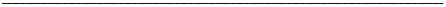
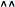
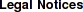

Here are some useful links that are in some way related to my research.
Institutions
American Astronomical Society
(AAS)
Canadian Astronomical Society
(CASCA)
Canadian Space Agency
(CSA)
Environment Canada
(EC)
Weather Office
Brentwood Bay, British Columbia
Eureka, Nunavut
International Astronomical Union
(IAU)
National Aeronautics and Space Administration
(NASA)
National Research Council Canada
(NRC)
Online NRC "Time Signal"
Canadian Gemini Office
(CGO)
Eric Steinbring entry in Staff Directory
Natural Resources Canada
(NRCan)
Polar Continental Shelf Program
(PCSP)
National Science Foundation
(NSF)
Center for Adaptive Optics
(CfAO)
Natural Sciences and Engineering Research Council of Canada
(NSERC)
University of Alberta
(UofA)
Department of Physics
University of British Columbia
(UBC)
Department of Physics and Astronomy
University of California, Santa Cruz
(UCSC)
Department of Astronomy and Astrophysics
University of Victoria
(UVic)
Department of Physics and Astronomy
University of Winnipeg
(UofW)
Department of Physics
Observatories
Canada-France-Hawaii Telescope
(CFHT)
Dominion Astrophysical Observatory
(DAO)
Gemini Observatory
Hubble Space Telescope
(HST)
James Webb Space Telescope
(JWST)
Keck Observatory
Polar Environment Atmospheric Research Laboratory
(PEARL)
Thirty-Meter Telescope
(TMT)
University of California Observatories / Lick Observatory
(UCO/Lick)
Databases and Servers
Astrophysics Data System
(ADS)
Current listing for Eric Steinbring
Astrophysics Source Code Library
(ASCL)
Current listing for Eric Steinbring
Canadian Astronomy Data Centre
(CADC)
Canadian Broadcasting Corporation
(CBC)
Online News
Technology and Science
Deep Extragalactic Evolutionary Probe
(DEEP)
Facebook
GitHub
Google
Google Search for Eric Steinbring
Google Scholar profile for Eric Steinbring
Interactive Data Language Astronomy User's Library
(IDL Astrolib)
LinkedIn
Los Alamos Preprint Server
(arXiv)
NRC Microsoft Outlook Web Access
(OWA)
Netscape
NASA / Infrared Analysis and Processing Center Extraglactic Database
(NED)
ResearchGate
Twitter


